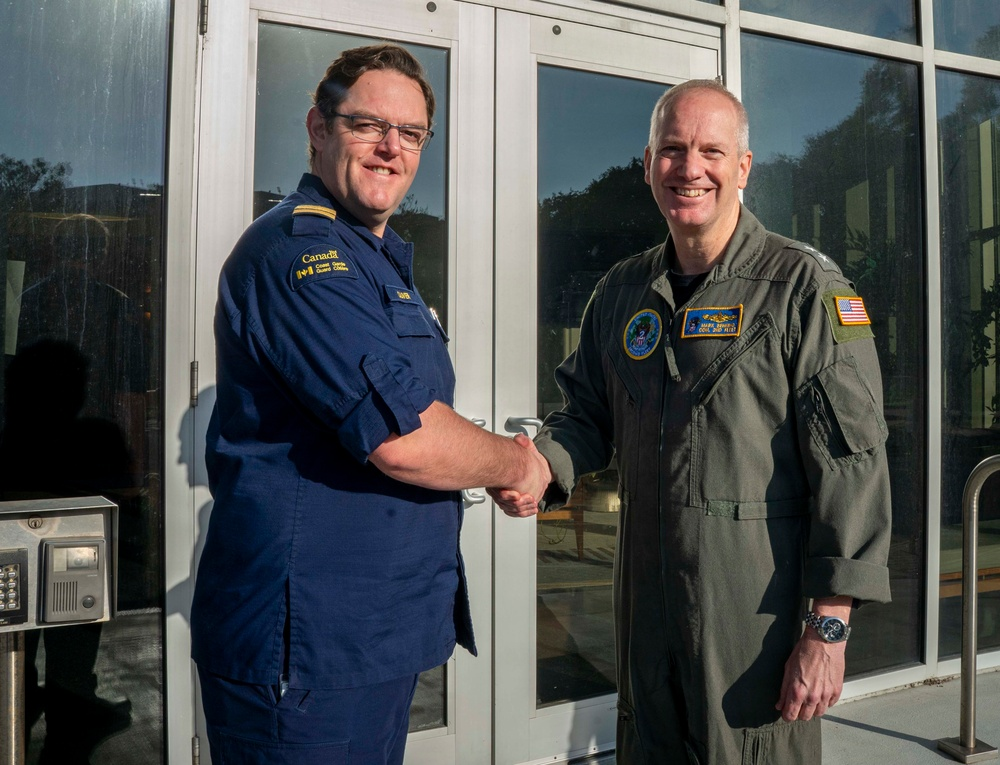

U.S. and Canadian staffs closed a five-day command-post drill in Norfolk
U.S. 2nd Fleet said Navy, Marine Corps, and Coast Guard staff officers from the United States and Canada finished the Frontier Sentinel 2026 command-post exercise on Oct. 30. The drill ran in Norfolk from Oct. 26 to 30. No ships or aircraft deployed. Staff from 2nd Fleet, Coast Guard Atlantic Area, Canada's Joint Task Force Atlantic, and the Canadian Coast Guard worked a simulated Atlantic and Arctic crisis under the Atlantic Maritime Security Coalition. Rear Adm. Mark Behning, acting commander of 2nd Fleet, said sharing maritime awareness early lets the two countries address a crisis before it develops. Royal Canadian Navy Rear Adm. David Mazur, vice commander of 2nd Fleet, called the exercise the place where the staffs build collective muscle memory before a live exercise at sea in the summer of 2027. U.S. Marine Corps Maj. Logan Baisden, the lead planner, said the scenario used simulated undersea threats to find friction in joint processes.